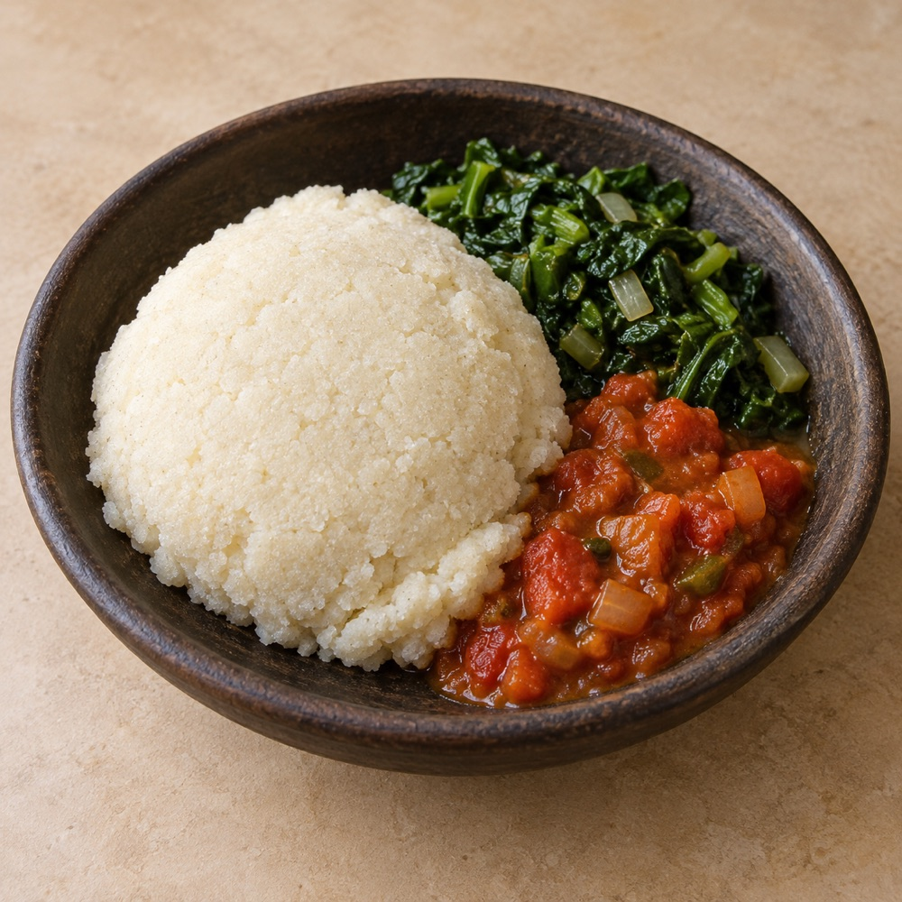

世界のフフ


※掲載画像はイメージです。
比較資料
「フフ」という呼び名の広がりと、でんぷん質の主食という大きな共通性。その両方を見ながら、違いを丁寧にたどります。
分類について
本ページでは、fufu / foufou / foutou / akpu / pounded yam を「フフおよび近縁の料理」、ugali / nsima・nshima / sadza / pap を「比較対象となる類似主食」として扱います。すべてを同じ料理の別名とはしません。
フフおよび近縁の料理
Fufu / Foufou / Foutou
西・中央アフリカで用いられる呼称群です。キャッサバ、ヤム、プランテン、ココヤム等が用いられます。綴り、材料、発酵の有無、搗き方は地域によって異なります。
Akpu
ナイジェリア、とりわけイボ語圏で、発酵させたキャッサバを原料とするフフを指す名称として用いられます。pounded yam とは原材料・工程が異なります。
Pounded Yam
ゆでたヤムを滑らかで伸びのある状態まで搗いた料理です。広義にフフ類と並べられることがありますが、原料を明記して紹介するのが適切です。
比較対象となる類似主食
以下は、主にトウモロコシ粉等を湯で練る厚い粥・生地状の主食です。スープや煮込み、副菜と合わせ、手で取り分けることがある点などに共通性がありますが、歴史、原料、名称、地域的な意味はそれぞれ異なります。
地域・材料・製法の比較
| 名称 | 主な地域の例 | 主原料の例 | 製法・特徴 | 本サイトでの区分 |
|---|---|---|---|---|
| Fufu / Foufou | ガーナ、ナイジェリア、カメルーン、コンゴ地域ほか | キャッサバ、ヤム、プランテン、ココヤム等 | ゆでて搗く、発酵加工する、粉を練る等。内容は地域差が大きい。 | フフ／近縁 |
| Foutou | コートジボワール等 | プランテン、キャッサバ等 | 加熱した素材を搗いて仕上げる例がある。 | フフ／近縁 |
| Akpu | ナイジェリア南東部等 | 発酵キャッサバ | キャッサバを発酵・加工して練り上げる。 | フフ／近縁 |
| Pounded Yam | ナイジェリア、ガーナ等 | ヤム | ゆでたヤムを搗き、滑らかで弾力のある状態にする。 | フフ／近縁 |
| Ugali | ケニア、タンザニア等、東アフリカ | 主にトウモロコシ粉 | 粉を湯で練る厚い粥状の主食。地域により他穀物も用いる。 | 類似主食 |
| Nsima / Nshima | マラウイ、ザンビア等 | 主にトウモロコシ粉 | 厚い粥状に調理し、副菜と食べる。マラウイのnsimaの食文化はUNESCO無形文化遺産。 | 類似主食 |
| Sadza | ジンバブエ等 | 主にトウモロコシ粉 | 水と粉を加熱し、硬さを調整して主食とする。 | 類似主食 |
| Pap | 南アフリカ等 | 主にトウモロコシ粉 | 軟らかいものから硬いもの、粒状のphuthuまで仕上がりが多様。 | 類似主食 |
※ 地域欄は代表例であり、分布を限定するものではありません。現地語の綴り・用法には幅があります。
参考資料
- [W1] FAO, Traditional post-harvest technology… Cassava.
- [W2] FAO, Traditional processing and utilization of cassava in Africa.
- [W3] FAO, Main dishes: Fufu and Ugali.
- [W4] UNESCO, Nsima, culinary tradition of Malawi.
- [W5] Free State Department of Education, Recipe book for the NSNP（Pap）.